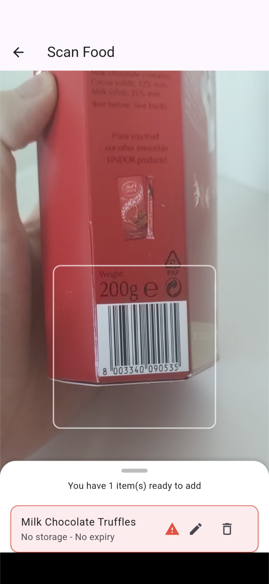
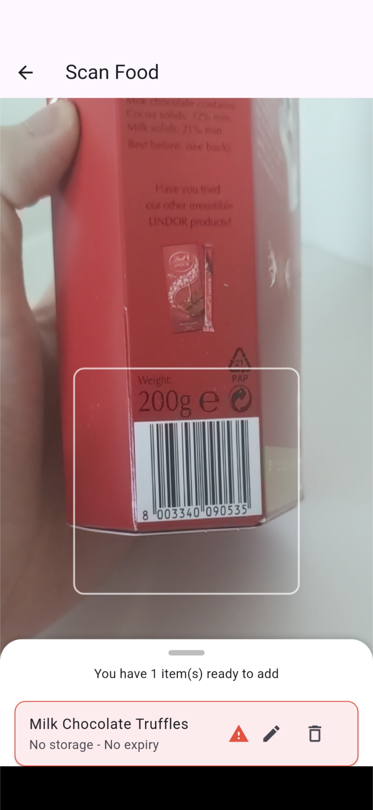

About the App
FridgeGuard helps you track food items in your fridge or freezer, monitor their expiry dates with visual reminders, and stay updated on your fridge's internal temperature using real-time MQTT streaming.
Key Features
- Manual and barcode-based food item registration
- Expiry reminders with color coding
- Live fridge temperature monitoring and alerts
- Secure login with Firebase Authentication
- Cloud database with Firebase Firestore
Screenshots

 

App Demo Video
Technologies Used
- Flutter
- Firebase Authentication
- Firebase Firestore
- MQTT Protocol (Mosquitto Broker)
- OpenFoodFacts API